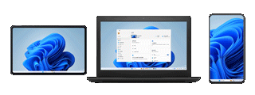

把平板变成第二块显示器——ExtensoDesk 实战教程
手把手教你用 ExtensoDesk 把安卓平板当 Windows 电脑的扩展屏，从安装到配对再到日常使用，五个步骤搞定扩展模式、触摸交互和手写笔。
这篇教程看完，你能在 15 分钟内把安卓平板变成 Windows 电脑的第二块显示器，窗口拖拽、触摸操作、甚至手写笔都能用上。不是什么新概念了，但去 ExtensoDesk官网 看了一圈，它在连接稳定性和功能完整度上确实做得扎实。
准备工作
在动手之前，先确认你手头有这些东西：
- 一台 Android 平板（系统版本 8.0 以上，屏幕 10 寸体验最佳，7 寸也能跑但操作空间有限）
- 一台 Windows 10 或 11 的 64 位电脑
- 两者要在同一个 WiFi 局域网里，或者准备一根 USB 数据线（Type-C 或 Micro-USB，看你平板接口）
- 电脑显卡驱动版本 27.x 以上（过旧的驱动会导致安装后闪退）
别担心会员版的事——免费版已经覆盖了扩展屏、WiFi/USB 双连接、触摸和手写笔这些核心功能，先跑通再考虑要不要开会员解锁声音输出、自动重连和高帧率。
第一步：电脑端安装（管理员权限是硬要求）
ExtensoDesk 的 Windows 服务端是整个方案的核心，它负责捕获电脑画面传给平板、接收平板的触摸事件传回电脑。安装时必须以管理员权限运行，跳过这一步后面百分之百连接失败。
1.1 获取安装包
从 ExtensoDesk下载 拿到最新版安装包（当前 v1.3.5，33MB）。下载完可以核对一下 SHA256 确保文件没损坏，在命令提示符里跑 certutil -hashfile 安装包名 SHA256 就行，不过官网直下一般没问题，嫌麻烦可以跳过。
1.2 右键管理员运行
这一步不能省。 右键安装包 → 以管理员身份运行 → UAC 弹窗点「是」。如果弹出「服务创建失败」或「注册表错误」，十有八九是没管理员权限，退出重来。
1.3 跟随向导完成
安装向导界面很简洁，基本一路下一步就行。唯一要注意的是安装路径保持默认，自定义路径容易碰到权限问题。进度条走完后先别急着关安装器——它会自动帮你配置 Windows Defender 防火墙规则。
1.4 防火墙放行
安装器跑完会弹 Windows 防火墙提示，问是否允许 ExtensoDesk 通过。必须勾选专用网络和公用网络，然后点允许访问。 勾完关掉安装器，桌面会出现一个 ExtensoDesk 快捷方式。
如果当时没点对或者弹窗没出现，事后去「控制面板 → Windows Defender 防火墙 → 允许应用或功能通过防火墙」，手动找到 ExtensoDesk，把专用和公用网络都勾上就行。没放行的直接表现就是平板能搜到设备但连不上，超时断连。
1.5 首次启动
双击桌面快捷方式启动服务端，主界面会显示本机的 IP 地址（比如 192.168.1.100）。把这个地址记下来，WiFi 连接要用。界面空白或者闪退的话，更新一下显卡驱动——ExtensoDesk 对驱动版本有硬性要求。

第二步：平板端安装与打开
平板端就简单多了。下载 Android 客户端安装包，装上后打开 App，会自动扫描局域网里的 ExtensoDesk 服务端。扫描几秒就能搜到你电脑的 IP 地址，点一下开始配对。
如果扫描不到，手动点「添加设备」输入刚才记的 IP 就行。配对时服务端那边会弹确认框，点允许，平板端就会显示扩展模式的选择界面。
第三步：选择扩展模式，开始用
配对成功后，平板端默认就是扩展屏幕模式——这正是我们想要的效果。现在电脑的屏幕空间多了一块，窗口可以自由拖拽到平板上，平板变成了真正的第二显示器。
试试把浏览器窗口往电脑屏幕右边拖，拖过界就能看到窗口出现在平板上。平板的触摸操作此时也生效了，手指戳一下平板上的按钮就等于在电脑上点一下，滑动翻页也丝滑。
如果想让平板完全克隆电脑屏幕（比如演示的时候），切换到镜像模式就行。扩展模式适合日常双屏办公，镜像模式适合投屏共享，按需切换。

第四步：日常使用的几个关键点
跑通连接之后，几个实用操作值得记一下：
手写笔支持。如果你手里有手写笔（无论是电容笔还是被动式触控笔），直接在平板上写画就行，ExtensoDesk 支持压感输入，画图、标注、手写笔记都没问题。Windows 端还自带手写笔测试工具，可以测一下压感是否正常。
键盘输入。需要打字的时候，在平板上唤起安卓键盘就行——用你熟悉的输入法（Gboard、搜狗都可以），输入的文字直接传到电脑上。如果平板连了蓝牙键盘，那套键盘直接当成电脑键盘用，快捷键 Ctrl+C、Ctrl+V 也能映射过去。沙发上写文档、发邮件特别方便。
横竖屏。平板想横放就横放、想竖放就竖放，ExtensoDesk 自动适配方向。客户端 v1.4.2 以上还能在平板端自主切换，不用跑电脑那边调。
第五步：USB 连接 + 自动切换（进阶优化）
WiFi 已经够用了，但如果你追求更低延迟（比如玩游戏或者高精度绘图），USB 连接是更好的选择。插一根数据线连平板和电脑，ExtensoDesk 自动识别并切换到有线模式，延迟从 WiFi 的几十 ms 降到 USB 的 ms 级，画面几乎零延迟。
更妙的是 v1.3.2 之后新增的 USB 断开自动转 WiFi 功能——插上 USB 时是有线模式，不小心碰掉线了自动切回 WiFi，画面不中断、触控继续响。沙发上挪平板、从工位走到会议室，都不用担心突然黑屏。这个功能在平板端 App 设置里手动开启，默认是关的。具体配置步骤和注意事项可以翻 ExtensoDesk文档 对照。
新手最容易翻车的三个地方
卡点一：防火墙没放行，连接超时
这是新人踩最多的坑。安装时防火墙弹窗没勾对，或者防火墙策略被组策略/安全软件接管了，平板搜得到设备但一连就超时。解法就是去防火墙设置里手动勾上 ExtensoDesk 的专用网络和公用网络权限，立竿见影。
卡点二：分辨率或刷新率不对
ExtensoDesk 默认自适应平板分辨率，但有时显示效果不理想。去服务端设置里调一下——4K 屏可以开超清，240Hz 高刷需要电脑端 v1.1.2+ 和平板端 v1.1.7+ 同时支持，两边版本要对上。
卡点三：触摸不响应
平板端支持三种触摸模式：普通模式、禁用触摸、仅笔模式。如果你发现手指戳不动界面，大概率是被切到了「仅笔模式」——在平板端 App 设置里切回普通模式就行。
往下还能玩什么
跑通基础扩展屏之后，可以试试会员版的声音输出——电脑的声音直接传到平板播放，平板瞬间变成外接音响。或者多个平板同时克隆一个电脑屏幕做会议演示。极限性能模式在追求极致流畅时开一下，HDR 模式让画面色彩更鲜艳。这套方案的上限，取决于你手里那台平板的屏幕素质和你愿意折腾到什么程度。值得一提的是，ExtensoDesk 相关的文档资料和源码在 GitHub、Gitee、GitCode 三个仓库都能拿到，国内访问选后两个更顺畅。